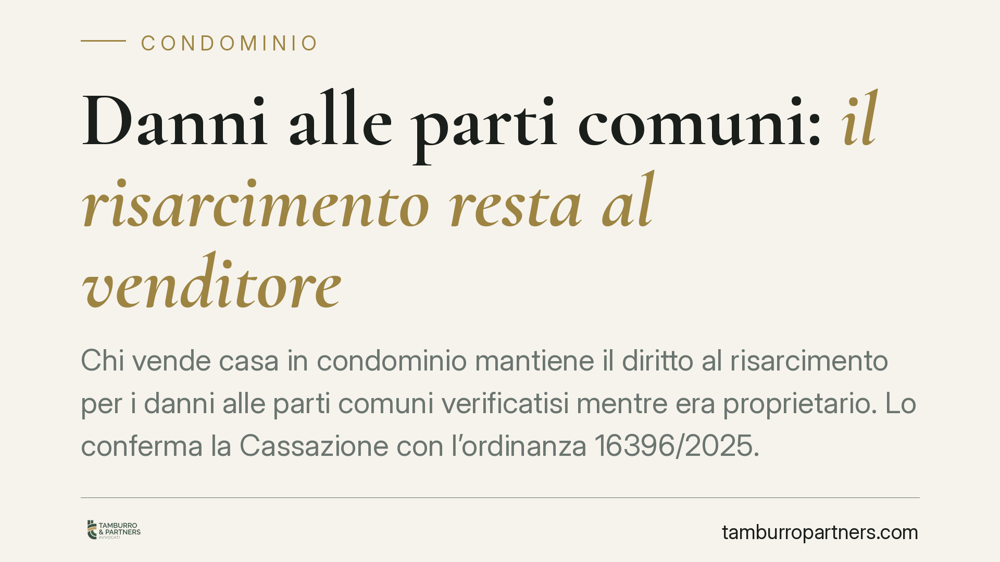

Danni alle parti comuni: il risarcimento resta al venditore
Chi vende casa in condominio mantiene il diritto al risarcimento per i danni alle parti comuni verificatisi mentre era proprietario. Lo conferma la Cassazione con l'ordinanza 16396/2025. L'acquirente subentra in quel credito solo se il rogito lo cede espressamente. Una precisazione che incide sulla redazione dei contratti di compravendita e sulla gestione dei contenziosi condominiali.

Il caso deciso dalla Cassazione
La Corte di Cassazione, con l'ordinanza n. 16396/2025, torna su una questione ricorrente nella pratica: a chi spetta il risarcimento del danno alle parti comuni dell'edificio quando l'immobile viene venduto?
La risposta dei giudici è netta. Il credito risarcitorio appartiene a chi era proprietario nel momento in cui il danno si è prodotto. La successiva vendita dell'appartamento non trasferisce automaticamente questo diritto all'acquirente.
Inquadramento normativo
Il principio si fonda sulla natura del credito risarcitorio. Il diritto al risarcimento è un diritto di credito autonomo, che nasce nel patrimonio del danneggiato nel momento del fatto illecito. Non è un accessorio del bene: non "segue" l'immobile come farebbe una servitù o un onere reale.
L'art. 1118 del Codice civile chiarisce che il diritto di ciascun condomino sulle parti comuni è proporzionale al valore della sua unità e non può essere separato dalla proprietà del singolo piano. Ma questo lega la *contitolarità* delle parti comuni alla proprietà dell'unità: non implica che anche i crediti già maturati passino al nuovo acquirente.
Gli artt. 1130 e 1131 c.c. disciplinano invece i poteri dell'amministratore, che rappresenta il condominio nelle azioni relative alle parti comuni. L'amministratore può agire per il risarcimento del danno all'edificio, ma la legittimazione a incassare il credito individuale resta del singolo condomino titolare nel momento del danno.
In sintesi: la proprietà dell'unità immobiliare si trasferisce con il rogito; il credito risarcitorio già sorto resta al venditore, salvo diversa pattuizione.
Cosa cambia per venditore e acquirente
Le implicazioni pratiche sono concrete e spesso trascurate.
Per chi vende. Se durante il periodo di proprietà si è verificato un danno alle parti comuni – ad esempio infiltrazioni dal tetto, cedimenti strutturali, allagamenti da rotture di tubazioni condominiali – il diritto al ristoro rimane in capo al venditore anche dopo la cessione. Chi vende può quindi continuare a far valere quel credito verso il condominio o verso il terzo responsabile.
Per chi acquista. L'acquirente non subentra automaticamente in quel diritto. Se al momento del rogito esistono danni non ancora risarciti, l'acquirente rischia di ritrovarsi con un immobile deprezzato ma senza alcun titolo per pretendere il risarcimento, che resta del precedente proprietario.
Il punto critico riguarda i danni non ancora manifestati o le controversie pendenti. Un contenzioso condominiale in corso, o un danno latente che emergerà dopo la vendita, può generare aspettative economiche di cui l'acquirente ritiene di beneficiare, salvo poi scoprire che il credito non gli appartiene.
La soluzione è contrattuale. Il credito risarcitorio è cedibile ai sensi degli artt. 1260 e seguenti del Codice civile. Le parti possono quindi prevedere nel rogito una cessione espressa del credito dal venditore all'acquirente, così da allineare la titolarità del diritto alla proprietà del bene.
Cosa fare in concreto
- Verificare lo stato delle parti comuni prima del rogito. Richiedere all'amministratore una relazione su danni esistenti, contenziosi pendenti e procedure risarcitorie in corso.
- Inserire nel contratto una clausola espressa sulla titolarità dei crediti risarcitori: se l'intenzione è trasferirli all'acquirente, prevedere una cessione formale del credito.
- Distinguere danni pregressi e futuri. Regolare separatamente i danni già verificatisi e quelli che dovessero emergere successivamente al trasferimento.
- Consigliamo di acquisire i verbali assembleari degli ultimi anni, per individuare delibere relative a lavori, danni o azioni legali che possono incidere sul valore dell'operazione.
- Coordinare la vendita con l'amministratore quando è pendente un'azione risarcitoria, per definire chi curerà il seguito e chi incasserà l'eventuale ristoro.
La compravendita di un immobile in condominio non si esaurisce nel trasferimento del bene. La titolarità dei crediti e la gestione delle situazioni pendenti richiedono clausole calibrate sul caso concreto, per evitare che il valore economico di un diritto resti nelle mani di chi non è più proprietario.
Contributo informativo a cura di Tamburro & Partners - Avv. Giuseppe Tamburro. Non costituisce parere legale.
Ogni condominio ha una storia a sé.
Se gestisci un'amministrazione e vuoi un confronto su una specifica questione condominiale, scrivi allo studio. Ti rispondiamo entro un giorno lavorativo.